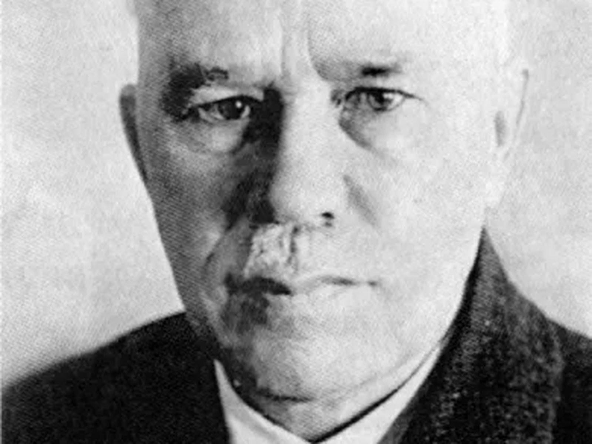

Родился 22 апреля 1877 года в селе Сюмси Малмыжского уезда Вятской губернии. После школы он окончил городское училище в Малмыже, а в 1897 году — Казанский учительский институт. Четыре года проработал учителем, но затем сделал решительный шаг: поступил на медицинский факультет Казанского университета и окончил его с отличием. После университета Парин работал в факультетской хирургической клинике под руководством профессора В. И. Разумовского. В 1912 году он защитил докторскую диссертацию и был направлен в заграничную научную командировку в Европу. В 1921–1923 годах Василий Николаевич был деканом медицинского факультета Пермского государственного университета. А в военные годы руководил госпитальной хирургической клиникой, был главным хирургом эвакогоспиталей Пермского края и проводил большую работу по их совершенствованию. Парин был известен как разносторонний хирург и учёный. Он внёс значительный вклад в развитие сосудистой хирургии, травматологии, пластической и челюстно-лицевой хирургии. Он создал свою научную школу: подготовил 10 докторов и более 10 кандидатов медицинских наук, 18 его учеников заведовали кафедрами. Им и его учениками написано около 400 научных работ по различным вопросам хирургии.
Главный хирург эвакуационных госпиталей Пермского края в годы войны; основатель собственной хирургической школы.